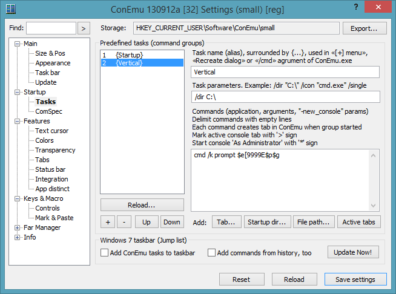
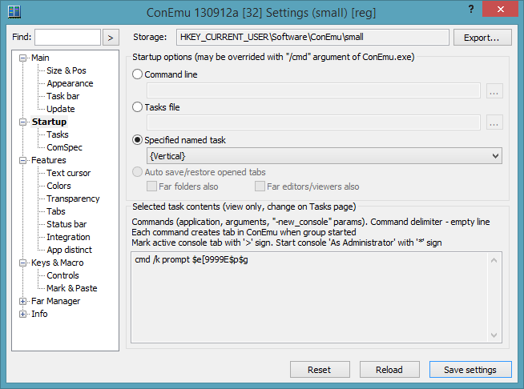
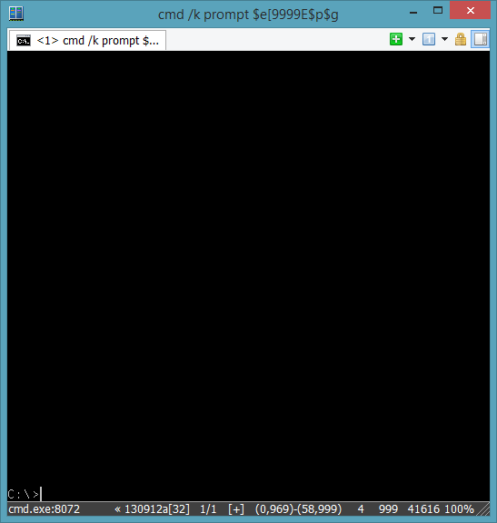

Do you want to get your cmd.exe prompt bottom aligned? On ConEmu startup and after "cls"?
Actually, I can't understand why anyone use cmd as shell but not a FarManager. It's a fast handy and powerfull combination of:
Try it! Download and install into ConEmu's folder (put far.exe near to ConEmu.exe) and run it. If you don't need panels on startup (really?) - press Ctrl+O, Ctrl+B and save configuration changes Shift+F9. You will get command prompt with permanent history (Alt+F8).
OK. If you still want use plain "cmd.exe" - here is one trick using AnsiEscapeCodes.


